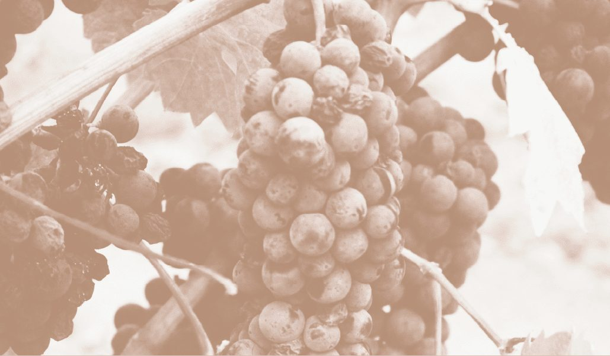

Each course is a memory, cooked.
Tom's menus trace the moments and people that made him a chef — a childhood kitchen in Norfolk, the great Paris and London kitchens, the produce of a small island. Every course carries the title of the memory it comes from.
The Tasting Menu
The full story in ten courses. The titles are Tom's; the dishes move as the season does.
Cooked fresh to order in a kitchen where nuts and shellfish are present — please tell us about any allergies when you book. A discretionary 15% service charge is added to the bill.
Lunch Tasting
The shorter telling: six chapters from the ten, for a long lunch in the mews.
Cooked fresh to order in a kitchen where nuts and shellfish are present — please tell us about any allergies when you book. A discretionary 15% service charge is added to the bill.
- 01Forever PickingSnacks of the seasonThe garden at home, and everything in it that could be eaten.
- 02Making & BreakingSourdough, cultured butterBread: comfort, sharing, and every memory kneaded into it.
- 03From a Humble BeginningOnion, Truffle, Egg YolkThe onion, peeled ten thousand times for other dishes, finally takes the lead.
- 04The Love Affair ContinuesTurbot, Duck Confit, MashFrance, and the chefs who turned it into a love affair.
- 05Made in Great BritainGrouse, Turnip, ElderberriesWild grouse from the North Pennines moors. Never reared.
- 06Life Has Never Been So SweetPlum, Cardamom, GrainsSweet meets salt, through fermentation and patience.
À la Carte
Choose your own way through the season — one dish from each chapter. Snacks and bread come to every table.
Cooked fresh to order in a kitchen where nuts and shellfish are present — please tell us about any allergies when you book. A discretionary 15% service charge is added to the bill.
- 01From a Humble BeginningOnion, Truffle, Egg YolkorCrab, Celeriac, Pear
- 02The Love Affair ContinuesTurbot, Duck Confit, MashorGrouse, Turnip, Elderberries
- 03It's All in the LeavesFigs & Leaves, Pinenut, Puff PastryorPlum, Cardamom, Grains

Pairings built for the table.
Elisa, our head sommelier, designs pairings to suit all tastes — classic vintages through to organic and biodynamic growers.
Choose a flight to follow the tasting menu, or go glass by glass. The cellar also opens for the Wine Cellar Series every Tuesday.

One-night collaborative tasting menus.
Eight courses, cooked live at the counter by Tom and a guest chef. Each menu is written for that evening alone and released closer to the date.